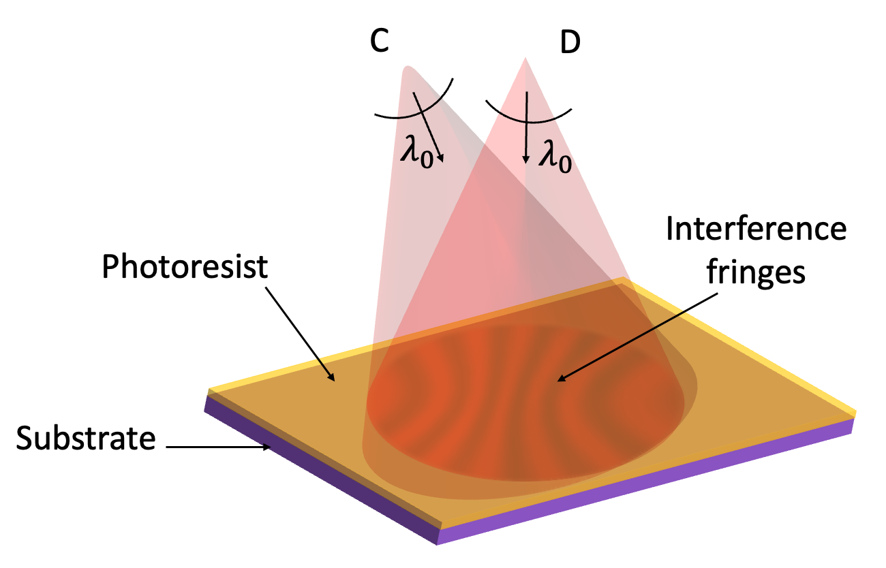

Variable Line Spacing (VLS) diffraction gratings are recorded holographically, with two coherent beams interfering on a photoresist coated substrate to write the line pattern. My internship was to compare the line density that comes out of a real two beam recording configuration against the theoretical density defined by a target polynomial law, and build a tool that could optimize the recording setup to close that gap.

There was no existing method for this, so I defined the merit function myself, tested and compared several optimization algorithms for robustness in a parameter space where small variations mattered a lot, and validated every step against theoretical values before trusting the result.
Partway through the internship, I identified that MATLAB's missing optimization toolbox was going to limit what the tool could do, and proposed migrating the entire codebase to Python. I then owned that migration myself, rewriting every function around portability, readability and performance instead of porting it line by line. I also built the tool's visualization layer, rendering the VLS recording setup itself with its optical elements and ray paths, the resulting line shapes across the grating, tolerancing of the recording arm parameters, and the polynomial fit used to extract the density coefficients. The result is a numerical tool HORIBA is currently using directly for actual holography and optical design work.